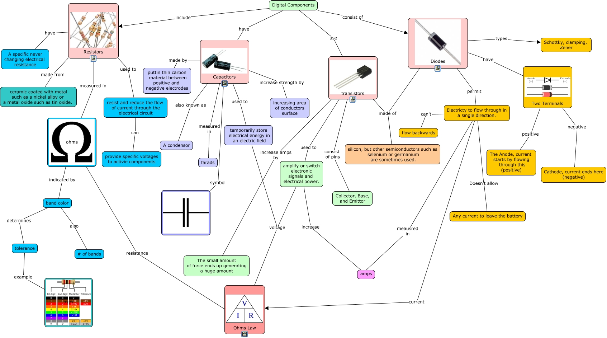

WARNING:
JavaScript is turned OFF. None of the links on this concept map will
work until it is reactivated.
If you need help turning JavaScript On, click here.
This Concept Map, created with IHMC CmapTools, has information related to: digital components, amplify or switch electronic signals and electrical power. increase amps, Capacitors measured in farads, transistors increase amps by The small amount of force ends up generating a huge amount, Diodes made of silicon, but other semiconductors such as selenium or germanium are sometimes used., tolerance example ????, Resistors have A specific never changing electrical resistance, ohms resistance Ohms Law, band color determines tolerance, Digital Components consist of Diodes, Resistors measured in ohms, Diodes types Schottky, clamping, Zener, Capacitors symbol, Capacitors used to temporarily store electrical energy in an electric field, Electricty to flow through in a single direction. can't flow backwards, Diodes have Two Terminals, Electricty to flow through in a single direction. meausred in amps, band color also # of bands, temporarily store electrical energy in an electric field voltage Ohms Law, Diodes permit Electricty to flow through in a single direction., Electricty to flow through in a single direction. Doesn't allow Any current to leave the battery
